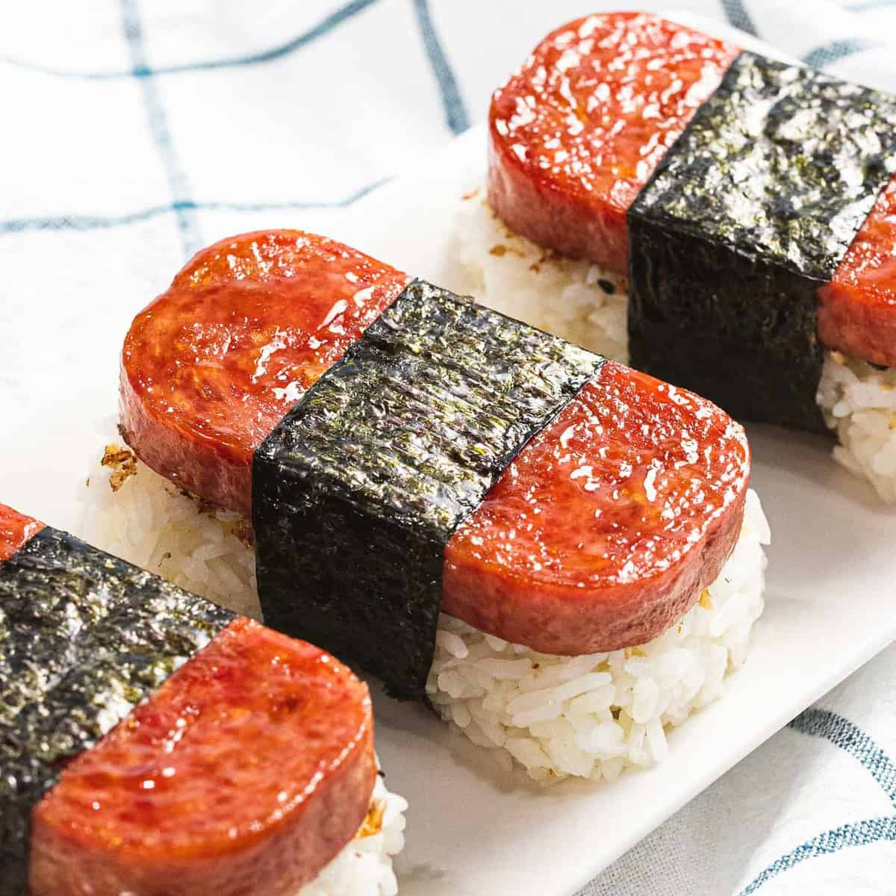

SPAM MUSUBI

Hawaiian Spam Musubi
A delicious Hawaiian recipe! Spam and rice wrapped in seaweed
is the perfect svaoury snack.
- 12 ounces Spam
- 1/4 cup oyster sauce
- 1/4 cup soy sauce
- 1/2 cup sugar
- Nori roasted seaweed used for sushi,
cut into halves or thirds
- 6 cups cooked sushi rice WITHOUT
the vinegar mixture added
- Slice the SPAM into about 8-10 slices
(depending on how thick you like it) and put in
a Ziplock bag. Mix oyster sauce, soy sauce, and
sugar until sugar is dissolved and add to the bag
with the SPAM. Marinate for about 15 minutes.
- Drain off marinade and fry SPAM on each side over
medium heat until slightly crispy or until desired
doneness. Some people like to glaze the SPAM with
the marinade/sauce AFTER frying, either way tastes
great!
- Place a strip of nori on a cutting board or clean
surface (shiny side down). Place your Musubi mold
across the middle of the nori. Add Sushi Rice to
the mold, pressing down firmly and evenly so there
is about 1-1 ½ inches of rice. Dip the mold and your
fingers in water as you go to prevent sticking.
- Next, remove the mold from the rice. Now you will
have a nice little block of rice right on the nori.
Add some of the cooked SPAM to the top. Wrap up one
side of the nori and stick it to the top of the
SPAM, then wrap up the other side. Just like you
are wrapping a nice little package. Use a little
water on your finger to seal if needed.
Serve warm.
- Some like it dipped in soy sauce, some like it
with ketchup, and some like it as is.